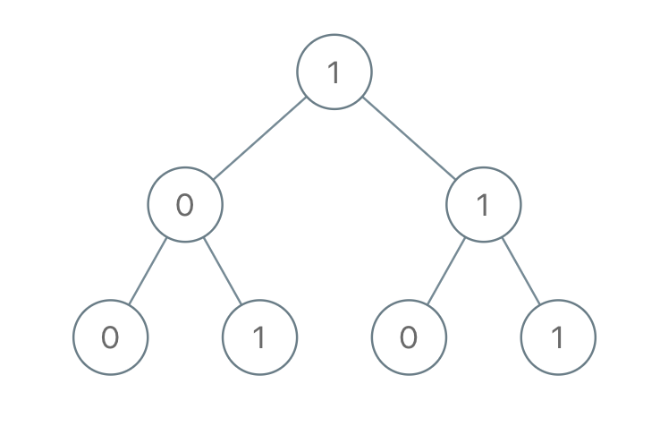

1022. 从根到叶的二进制数之和
DFS 带着当前值下行：每层 cur = cur×2 + 本结点位（左移一位再放新位），到叶子把 cur 累加进答案。
思路
- 二进制左移一位等价 ×2：往下走一层就是
cur = cur * 2 + node.val，不用真的拼字符串。 - 叶子（左右都空）路径结束，直接返回
cur让调用方累加。 - 非叶子返回两棵子树之和；空结点返回 0。
图解
最优解
1class Solution {2 public int sumRootToLeaf(TreeNode root) {3 return dfs(root, 0);4 }5 6 // cur：根走到当前结点已拼出的二进制值（每层 ×2 再加本结点位）7 private int dfs(TreeNode node, int cur) {8 if (node == null) return 0;9 cur = cur * 2 + node.val;10 // 叶子：路径定格，这个二进制数就是 cur11 if (node.left == null && node.right == null) return cur;12 return dfs(node.left, cur) + dfs(node.right, cur);13 }14}题目
给出一棵二叉树，其上每个结点的值都是 0 或 1 。每一条从根到叶的路径都代表一个从最高有效位开始的二进制数。
- 例如，如果路径为
0 -> 1 -> 1 -> 0 -> 1，那么它表示二进制数01101，也就是13。
对树上的每一片叶子，我们都要找出从根到该叶子的路径所表示的数字。
返回这些数字之和。题目数据保证答案是一个 32 位 整数。
示例 1：

输入：root = [1,0,1,0,1,0,1] 输出：22 解释：(100) + (101) + (110) + (111) = 4 + 5 + 6 + 7 = 22
示例 2：
输入：root = [0] 输出：0
提示：
- 树中的节点数在
[1, 1000]范围内 Node.val仅为0或1
题面取自力扣当前版本。
数据快照 2026-11-04。题面版权归力扣所有，本站点仅供本人学习使用，请勿对外发布。